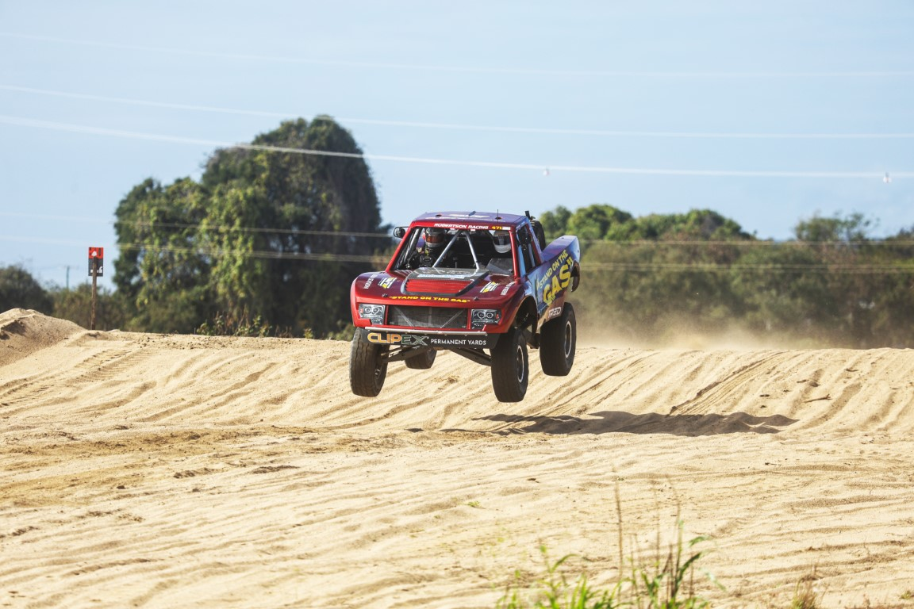

Event production · Bowen QLD
How 3,000 race fans heard every call along 300m of the Don River
The Don River Dash 300 sends off-road trucks, buggies and bikes flying through the river bed while the crowd lines the banks. Our job: make sure nobody missed the commentary, wherever they stood.

- 3,000spectators
- 300mof riverbank
- 40horn speakers
- 3sites, one weekend
One clear voice across 300 metres
Stack a few big speakers at one end of a crowd that long and you get two problems: the front row is deafened and the far end hears nothing. So we spread the sound out instead. A 100-volt line system, the same setup racecourses and stadiums use, fed 40 horn speakers spaced along the bank. Every spectator got the race calls at a comfortable level, from one end to the other, with power run out to the river to drive it all.
A front-row seat for the sponsors
In the sponsors’ tent, a 70-inch screen with its own speaker played the race live stream, so sponsors and guests could relax in the shade and still catch every jump.
Presentations at the Showgrounds
Back at the Bowen Showgrounds, four 12-inch speakers carried the presentations so every winner’s moment landed.
“The best presentation sound the event has had so far — way better than previous years. You could actually hear the presentations.”Daniel McDonald, Don River Dash
“Thank you, Max — you made it so easy.”Sue Tapp, Don River Dash
We’ll be back for the Dash in 2027.
Running an event where the crowd is spread out?
Race days, fun runs, rodeos, markets and festivals all share the same problem: the audience isn’t in front of a stage. Spreading the sound out beats one big stack every time. It’s clearer, it’s kinder on the ears, and it reaches everyone. We do this across Bowen, the Whitsundays and North Queensland. See our event production services or browse our hire gear.
Get a price for your eventIt takes a minute, and you’ll get an instant estimate.
Call Max on 0422 393 022